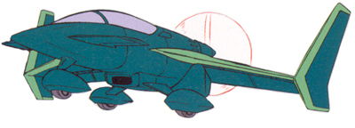

| Dragonfly |
|
|  | |
General and Technical Data |
|
|
Unit type: propeller aircraft Armament: 2x 25mm vulcan gun |
|
| Technical and Historical Notes | |
|
With the advent of the Minovsky scattering system, the Earth Federation Forces found themselves without a reliable line of communication through areas saturated with Minovsky particles. The Dragonfly light aircraft served as a communication and courier aircraft that allowed communication with areas suffering from minovsky jamming. Known to Zeon as the 'Commu', this small propeller-driver aircraft was of very light construction and had a large wing surface, which allowed it to be classified as a STOL (Short Take-Off and Landing) type aircraft.
Although a few were still in use as personal aircraft in the EFF, long range laser communications quickly invalidated the use for the Dragonfly in most situations, and many were sold to private investors. |
 RPG quick stats sheet
RPG quick stats sheet